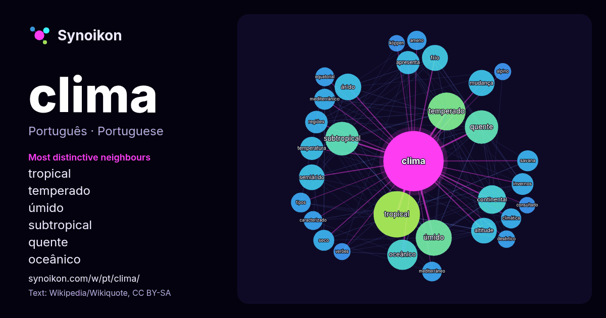

Português · palavra popular
clima
“climate” · As palavras encontradas ao seu redor em 1191 ocorrências da Wikipédia, Wikiquote.

Vizinhos mais característicos
- tropical 86×
- temperado 83×
- úmido 74×
- subtropical 64×
- quente 54×
- oceânico 54×
- árido 42×
- continental 39×
- semiárido 39×
- frio 35×
- altitude 28×
- mediterrânico 27×
- savana 26×
- seco 24×
- ameno 23×
- climática 22×
- temperatura 22×
- mudança 22×
- mediterrâneo 22×
- equatorial 21×
× = quantas vezes mais do que no texto geral da Wikipédia.
Vizinhos mais frequentes
- tropical 127
- temperado 85
- úmido 77
- subtropical 67
- quente 66
- oceânico 54
- continental 48
- região 46
- árido 42
- frio 40
- mudança 40
- altitude 39
- semiárido 39
- possui 36
- sul 36
- norte 33
- apresenta 32
- temperatura 32
- regiões 30
- brasil 29
Em contexto
- Nota: Para outros significados, veja Clima (desambiguação). O clima (do grego para "inclinação", referindo ao ângulo formado pelo eixo de Rotação da Terra Wikipedia snippets · Clima
- temperaturas médias acima de 10 °C. Este clima caracteriza regiões situadas entre as latitudes de 30º e 50º. O clima mediterrânico é o único onde a estação Wikipedia snippets · Clima temperado
- Clima semiárido, também conhecido como clima de estepe, é um clima típico de regiões que recebem precipitação abaixo da evapotranspiração potencial, mas Wikipedia snippets · Clima semiárido
- sudeste da China e sudeste dos Estados Unidos, e verão seco ou clima mediterrâneo (clima de Koppen Csa/Csb), onde as chuvas sazonais se concentram nos Wikipedia snippets · Clima subtropical
- , dizendo que sempre usou a frase "pintou um clima", e que nesse contexto significava "Pintou um clima para eu conversar com elas". Ele negou que as Wikipedia snippets · Pintou um clima
- os seguintes climas não tropicais. Cwa (clima subtropical úmido influenciado pelas monções ou clima tropical de altitude) — Estes climas apresentam um Wikipedia snippets · Clima tropical
- O clima mediterrânico ou clima de verão seco é um tipo de clima caracterizado por invernos chuvosos e verões secos. O nome desse tipo climático é oriundo Wikipedia snippets · Clima mediterrânico
- aquecimento continental. Clima do Brasil Neve em São Joaquim, Santa Catarina, onde ocorre o clima oceânico temperado. Clima subtropical no Parque Estadual Wikipedia snippets · Clima do Brasil
Mais palavras
- arte
- ciência
- comida
- coração
- cão
- deus
- dinheiro
- família
- força
- gato
- história
- língua
- morte
- natureza
- ouro
- ponte
- saúde
- trabalho
- trem
- verdade
- vida
- água
Pré-calculado em 2026-10-09 com as configurações padrão (±5 palavras, corpus médio). O mapa interativo pode atualizá-lo com dados ao vivo.
Interface traduzida automaticamente; correções são bem-vindas.